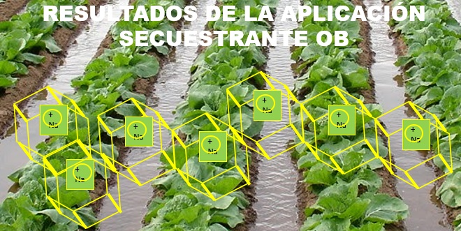

Efecto de la Salinidad en los Cultivos
El principal efecto es de tipo osmótico, la alta concentración de sales en el suelo hace que el cultivo tenga que hacer un consumo extra de energía para poder absorber el agua y los nutrientes del suelo, como consecuencias de este estrés el cultivo reduce su desarrollo vegetativo ya que se inhibe el crecimiento y la division celular y, por consiguiente, disminuye la produccion.
El efecto de una elevada sodicidad es la rotura de la estructura física del suelo, llegado a sellarse los poros por donde se mueve la solución con todos los nutrientees. Esto conlleva una falta de aireación, un encharcamineto e incluso un colapso del suelo.